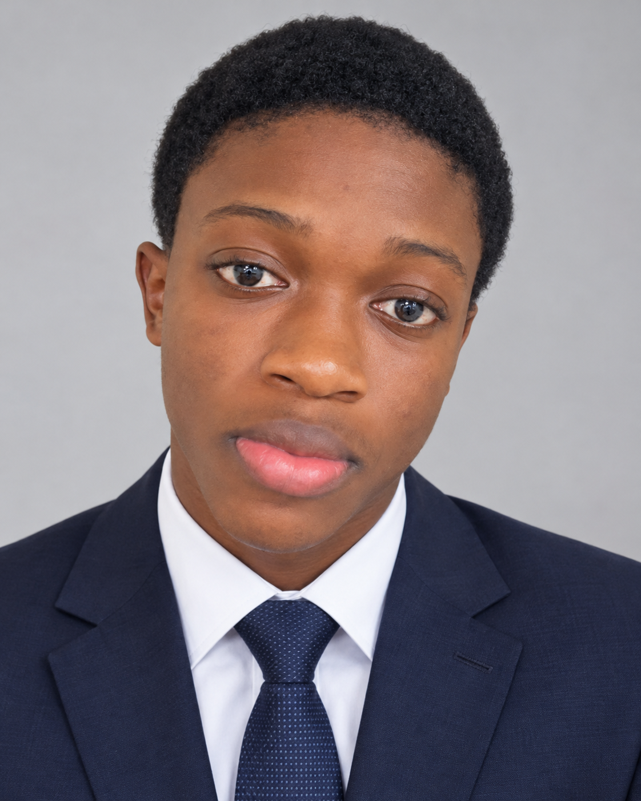

My approach
Start with the fundamentals, keep the design clear, and test across screen sizes.
GET TO KNOW ME
I'm Izuchukwu Martins, a beginner frontend web developer who enjoys turning ideas into clean, useful web pages.
I was born on the 25th of February 2010.
I attended my primary and secondary school in Port Harcourt, Rivers State, Nigeria

MY STORY
I'm developing my frontend skills with HTML, CSS and JavaScript. I like understanding how websites are structured, making layouts responsive, and adding interactions that make a site easier to use.
Each project gives me a chance to practise, solve problems and get more confident as a developer. I'm open to feedback, collaboration and opportunities to learn.
Start with the fundamentals, keep the design clear, and test across screen sizes.
Grow into a capable frontend developer by consistently shipping projects.
Readable code, accessible interfaces, curiosity and continuous improvement.